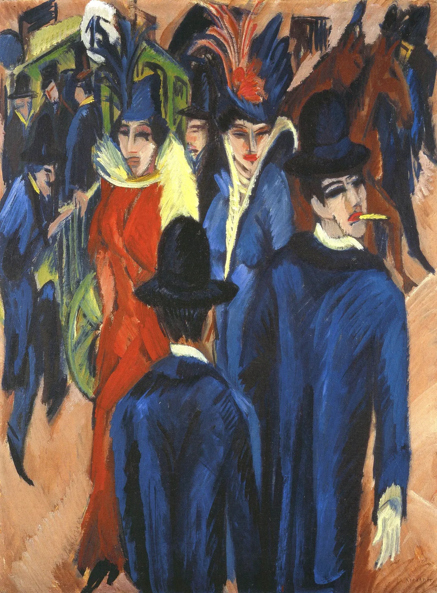

<< back
Otto Dix, "Portrait of the journalist Sylvia von Harden," 1926, oil and tempera on wood, Musée National d'Art Moderne, Paris.

Ernst Ludwig Kirchner, "Berlin Street Scene," 1913, oil on canvas, Neue Galerie, New York.
 Otto Dix, "Portrait of the journalist Sylvia von Harden," 1926, oil and tempera on wood, Musée National d'Art Moderne, Paris.
Otto Dix, "Portrait of the journalist Sylvia von Harden," 1926, oil and tempera on wood, Musée National d'Art Moderne, Paris.